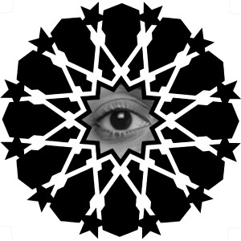
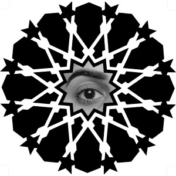
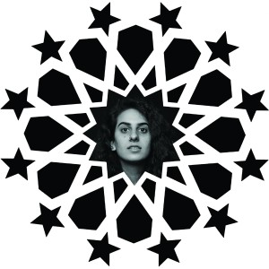
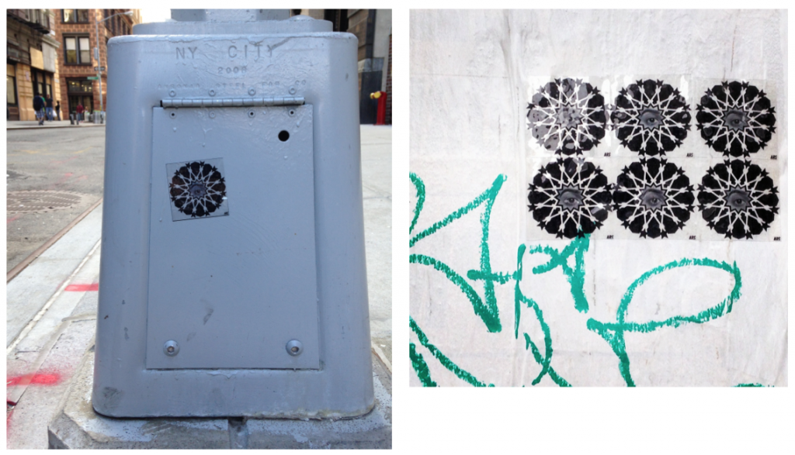

Ashley Rahimi Syed
Subaltern New York, NYU Spring 2014
In my many efforts to find a subaltern artifact that I could find some personal connection to, I came across a New York Times article about something called Art Adds. In January 2010, three NYC artists had their work featured on taxi cab cones in this project organized by Show Media and the Art Production fund. Shirin Neshat was one of these artists, and her mixed media piece Offered Eyes (1993) was the work chosen to be displayed. I didn’t know a lot about the artist then, but I did know that like myself, she was of Persian descent, and that she was critically acclaimed by Iranians and Americans alike.1

I thought it was totally weird and rad that her art would be shown in this way. I couldn’t really believe a work by a Persian artist, especially one that looked so overtly Middle Eastern, could be chosen to be made as highly visible as this. It became even more interesting to me when I learned of Neshat’s intention behind the remediation: according to the article, she had apparently chose the piece because she felt it spoke to the other-ness of the South Asian cab drivers in the city.
The original piece, Offered Eyes, is a self portrait that the artist made after her first return to Iran in 1990, after 15 years spent in the US. What had once been a quite western nation was now deeply Islamist and nativistic because of the change of government that accompanied the 1979 revolution. Women now were now mandated to wear the chador instead of the American and British fashions as they once favored. The Iran-Iraq War had brought eight years of strife and destruction upon the nation, and drove many of these women to take up arms and enter the battlefield as warriors, veil and all. Everything had changed since Neshat had left, and now her homeland was everything but—a totally unfamiliar, foreign place.2

Not only was she unfamiliar with the new culture, but she had missed out on a traumatic moment in her nation’s history that had come to shape the Iranian identity. “It wasn’t just the revolution, it was all these years of war with Iraq… years of grief… In a very strange way I was envious of them… In looking at how profound their experience had been, I felt so very much an outsider and so stupidly narcissistic.”3 Her years away had made her a stranger to the new Iranian experience, driving a wedge between her Persian and newly forged American identities.
She communicated this sense of cultural loss, disconnect and pure shock through the Women of Allah series, which she made upon her return to the United States. Spanning from 1993 to 1997, these works documented her “perception and understanding” of the new Iranian woman she had witnessed.4
However, because she was making these photographs in NYC for an audience of New Yorkers (it would prove quite difficult to legally display the work in Iran), Neshat was also heavily aware of “how profound the gap was between Iran and its perception abroad…Westerners have this sense that Iranian women are submissive victims. But they’re not victims, and they’re certainly not submissive.”5 The imposition of the chador in Iran seemed to delude her western audience into considering “the veil as a symbol of Muslim women’s oppression.” For this reason, Neshat wanted “the subjects of these images [to] look strong and imposing…[and] transform the female body into that of a warrior, determined and even heroic.”6 If there was one thing Neshat learned in her return to Iran, it was that Iranian women were able to endure and thrive in the most difficult of circumstances, and these photos serve to challenge any stereotypes that claim otherwise.
Through performance, text, and the subject’s gaze, Women of Allah functions both as a means to process the artist’s personal culture shock and address the western delusions of Middle Eastern women.
The gaze of the woman in Offered Eyes encompasses this entirely. The title of the series, Women of Allah, and the Farsi script make it clear to the audience that they meet the gaze of an Iranian (or at least Middle Eastern) woman, and this immediately calls to mind whatever personal conceptions of this being the viewer has. They must then meet the confrontational gaze with these notions at the front of their mind. The gaze is confrontational because of its steadfastness and somewhat ambivalent emotional read behind it. Is the woman expressing strength or weakness through her gaze? Is she challenging the viewer, or merely observing them? Regardless, the piece is able to incite some type of communication between the viewer and the viewed, and that seems to fulfill the artist’s intention behind it.
In 2010, Show Media and the Art Production Fund approached three artists whose work they felt was quintessentially New York and could read well in the confined space of a taxi cab cone. Shirin Neshat was one of these artists. The New York Times reports that “when she was approached about the project, her first thought was of the Pakistani- and Sengalese-born taxi drivers. ‘I felt I could make work that was truly non-Western, because it’s an extension of what New York is about,’ Ms. Neshat said.” Out of her entire body of work, she chose Offered Eyes in part because of its prominent use of Farsi script, as “‘It suggests that someone is speaking to you in a language that no one can understand,’” alluding to the foreignness of the cab drivers to a western consumer.7
The confrontation incited by Offered Eyes now takes on a whole new meaning when shifted into this context. While the Women of Allah series was eventually shown globally, the audience of this remediation consists entirely of New Yorkers. And unlike these gallery showings, each viewer only sees the work in passing, without any context or background. Most likely, they do not know that the eye belongs to a Persian woman, and that the work is partially based in the trauma of the Persian Revolution. Instead they see a foreign looking script surrounding an inquisitive eye, and can make any deduction from there. The viewer, as Shirin said, must certainly feel that the subject of the piece is speaking to them in a foreign language. And perhaps the medium in which the artwork is presented will bring to mind their foreign cab driver, and then the eye will take on the body of this individual. Instead of challenging the viewers preconceptions about Iranian women, now it can challenge the stereotypes against the largely South Asian cab driving fleet.
To provide a little background on the cab driving occupation: In NYC, fleet garages and brokerage houses monopolize the taxi industry. Most all drivers lease out these cars by the day, week or month for exorbitant prices. Only after they have paid off these leases do they begin to make any profit off of their fares. Sometimes, it can be 6 or 7 hours into their 12 hour shifts before a driver even breaks even. Mathew Biju, who worked closely with the New York City Taxi Workers Alliance for over a decade, explains that “At an average, drivers earned less than $5000 per week—working in excess of 72 hours each week—while the garage owners and brokers collected, again at average, in excess of $1,000 per week on each cab. A driver thus earned barely above minimum wage levels” at the start of the millennium.8
In addition to the financial struggles that plague this occupation, it also boasts the highest homicide rate of any job in the United States.9 Additionally, cab drivers are more likely to be the victims of passenger antagonism when they are of a different race or ethnicity.10 In New York City, where over 95% of the 50,000 or so cab drivers are foreign born, around 85% are Muslim, and 60% of South Asian descent, this fact proves especially relevant.1112 Almost the entire fleet are more likely to be the victim of some type of passenger aggression because they are the racial “other.”
In the immediate aftermath of 9/11, violence against cab drivers spiked significantly, with about 60% of taxi drivers reporting being the victim of some type of racial backlash on the job.13 Drivers also experienced a sharp decrease in profits due to a variety of reasons: lowered spending on the whole in New York city, fear on behalf of the drivers to resume work (because of an increase in racially charged hate crimes against Muslims or Middle Easterners/South Asians), increased hostility from passengers, and a wave of “regulatory” measures from the Taxi and Limousine commission (a decision many drivers feel was racially charged) that allowed for increased instances of police stoppage and harassment, and cost drivers business.14
The general results of the above were an overall increase in stress levels for taxi drivers. The aftermath of 9/11 created stressors regarding financial stability, personal safety, and safety for family members abroad as war loomed overhead.
The racial discrimination against these drivers is perhaps what Neshat wished to call to mind with her piece in 2010. Maybe, in this context, the gaze was meant to confront the western passerby and their possible stereotypes about the workforce that is simultaneously made hyper- visible by the ubiquitous yellow taxi and but invisible by the widespread discrimination against them.
I felt such a connection with the piece that I decided to remediate the original artwork again. What I love most about it is versatility: it is able to communicate the “otherness” of two unique cultures equally well, and adjusts its meaning to its context. It was also featured on an amazing medium that was seen by over 5 million New Yorkers every day. This means that the common man was engaged by this piece as equally as the high-brow Shirin Neshat aficionado that would see the piece in a gallery setting. In other words, the social agenda behind Offered Eyes was doled out indiscriminately to any New Yorker who could see a cab.
In my reinterpretation, I created a graffiti sticker featuring my own eye and separate imagery evocative of the Middle East. I wanted to keep the photo of the eye because I love the way Neshat is able to create a dialogue between herself and her viewer through this gaze. I tried to duplicate the range of emotion in Shirin’s eye in my own expression.
Instead of the Farsi script, which calls to mind a foreign language to the western viewer, I used a typical Islamic star pattern. This pattern is not based on any specific work already in existence, but is a stereotypical and easily recognizable tile pattern seen in the likes of Moroccan or Turkish architecture. It evokes, in the western mind, an exotic Middle Eastern land.
I layered the pattern a few times to make it look a bit less romantic and a bit more combative; I didn’t want the viewer to romanticize or exoticize the imagery anymore than it already is. I wanted, instead, the viewer to perhaps feel a bit uncomfortable when looking at this pattern, which is a way the’ve probably never felt before when viewing this type of thing. Even if this strategy, when accompanied with my confrontational gaze, doesn’t cause the viewer to immediately realize the ignorance or stereotyping behind this exoticization, at least it will make them feel a slight discomfort and start thinking about why that is.
 
I chose to make the piece into a sticker to try and reach the same visibility that came with the taxi cab medium. I don’t legally have any access to a stage that large, so I’ve resorted to the illegal.
I have already stickered before, so putting
up the work wasn’t the real issue. The brunt of the work lay in production: shooting the self-portrait, designing the piece, and printing the sticker. I print all my own work, but I usually work with brightly colored graphics on matte white paper. For this, my design was in black and white, with most of the black being the darkest, truest shade in the printer, on completely clear, glossy vinyl. I soon learned that clear vinyl is quite difficult for many photo printers to handle, spent a lot of time yanking destroyed sheets of vinyl out of the paper feed. True black is also very difficult for it to handle, so the sheets that made it through were often inconsistent in tone. After 20 or so destroyed sheets of vinyl, I finally figured out a good printing process.
Then I made the mistake of using a sticky laminate sheet over the sticker, as I usually do for my brightly-colored work. Apparently, this is a horrible weatherproofing method for mostly- black stickers, as any minuscule air bubble between the laminate and sticker becomes extremely obvious because it lessons the boldness of the true black. I lost another batch of stickers to this. But eventually I figured it out.
I’m calling the piece The SubAltern Eye, because it stands for the “othered” nature of Middle Easterners/South Asian New Yorkers, like myself, that has been outlined in this research. The work is up around NYC now, so keep your eyes peeled, because mine are! (ha ha ha)
Notes
1 Vogel, Carol. “Taxis to Show Art by Shirin Neshat, Alex Katz and Yoko Ono.” The New York Times [New York] 25 Dec. 2009.
2 MacDonald, Scott. “Between Two Worlds: An Interview with Shirin Neshat.” Feminist Studies 3 (2004): 628.
3 Babaie, Sussan, Rebecca R. Hart, Nancy Princenthal, and Shirin Neshat. Shirin Neshat. Detroit: Detroit Institute of Arts, 2013: 17.
4 Zanganeh, Lila Azam. My Sister, Guard Your Veil ; My Brother, Guard Your Eyes: Uncensored Iranian Voices. Boston, MA: Beacon, 2006: 45.
5 Zanganeh 2006, 46.
6 Shirin Neshat. New York: Rizzoli, 2010: 19.
7 Vogel 2009.
8 Mathew, Biju. Taxi!: Cabs and Capitalism in New York City. New York: New, 2005: 5.
9 Hamill, Heather, and Diego Gambetta. “Who Do Taxi Drivers Trust?” Contexts 5.3 (2006): 29.! 10 Schwer, Keith, Michael C. Mejtza, and Michel Grun-Réhomme. “Workplace Violence and Stress: The Case of Taxi Drivers.” Transportation Journal 49.2 (2010): 8.
11 Russell, Graham, and Gao Hodges. “Taxi! Cabs and Capitalism by Biju Mathew Review.” Journal of American Ethnic History 28.2 (2009): 117.
12 Gupta, Monisha Das. “Of Hardship and Hostility: The Impact of 9/11 on New York City Taxi Drivers.” Wounded City: The Social Impact of 9/11. New York: Russell Sage Foundation, 2005. 209.!
13 Gupta 2005, 215.
14 Gupta 2005, 223.
15 Art Production Fund. Alex Katz, Yoko Ono and Shirin Neshat: Art Adds 1. Art Production Fund. N.p., 4 Jan. 2010. Web. <http://www.artproductionfund.org/projects/alex-katz-yoko-ono- and-shirin-neshat-art-adds-1>.